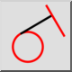
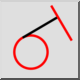
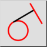
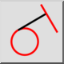

Prostopadła / styczna
Pasek narzędziowy / ikona:
 

Menu: Rysowanie > Linia > Prostopadła / styczna
Skrót: L, N
Polecenia: lineorthogonaltangent | orthotangent
Jest to tłumaczenie automatyczne.
Pasek narzędziowy / ikona:
 

Menu: Rysowanie > Linia > Prostopadła / styczna
Skrót: L, N
Polecenia: lineorthogonaltangent | orthotangent
Narzędzie to służy do tworzenia prostej prostopadłej do innej prostej i stycznej do istniejącego łuku, okręgu lub elipsy.